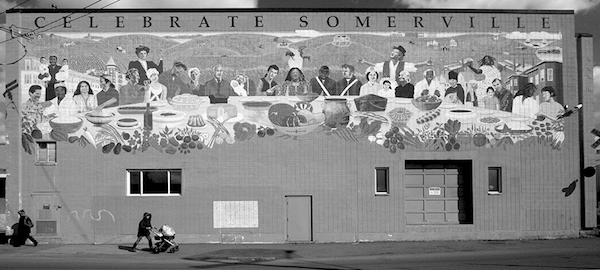

UNION SQUARE RENTERS
Socialist Tenants Union
Stop Gentrification Now!
Somerville is rapidly changing, and it's about to get a lot worse.
A private equity firm from Chicago that calls itself US2 has conspired with the mayor to turn Union Square into a bland wasteland of condos, biotech labs, and high-end stores. This urban renewal plan—known as "The Green Line Extension"—is a general plan to attract sprawl from MIT, Kendall Square, and Lechmere into the residential village of Somerville along the planned MBTA train line.
This entails the build-up of technology companies, luxury apartments, military contractors, pharmaceutical businesses, condominiums, and investment real estate buildings: whole tracts of land developed not for use as housing, but as means to make a profit. The mayor, Joe Curtatone, even begs for the tech giant Amazon to build a headquarters in our backyard.
City hall and US2 claim that this is progress. Union Square can become an "innovation district," they say, a vibrant new employment hub to benefit all. But in fact, US2's scheme is just another urban renewal plan in which rich people win and poor people lose out.
Their real plan is to turn our public land into a playground for high-income shoppers, wealthy students, and white professionals. Rent will go even further up, and poor renters and immigrants will be pushed out. Homes will be destroyed and people will be evicted. New businesses will crowd out smaller, older ones. White people will take over the sidewalks and our civic spaces, and try to erase people of color. In short, Somerville will suffer gentrification: a process in which struggling communities are colonized and displaced by capitalists.
Join us in stopping this nightmare.
We are building a solidarity network against landlords and developers, the leeches who weild unilateral power over us, the tenants. We want to form blocks of renters to discuss housing, neighborhood life, and concerns around rent and living conditions. We want to find common ground, and form collective strength in our homes and on the streets. We want to defend public housing and help build new public housing.
As the renters of Union Square, we want to take power back from the capitalists and the corrupt city hall, whose patronage network extends into the bloated offices of the Somerville Redevelopment Authorty, the Housing Authority, and the Police Department. We want to strike fear in the hearts of developers. We want to stop and reverse gentrification, and put forth a radical new vision of our community. We, the Union Square Renters, imagine a different future for Somerville, in which the rich do not get a say, and the workers have control.
Articles
- "What's in My Backyard?" by Karen Narefsky in Jacobin (August 2017). A former Union Square organizer attacks the idea of developing luxury real estate to fund low-income housing.
Our cities are experiencing a public health crisis because of the increase in evictions and displacement. Any philosophy that accepts this trade off—displacing existing residents in order to spur a small regional decrease in housing prices—is deeply flawed.
- "The People's Republic of Zuckerstan" by John Summers in The Baffler (January 2014). An overview of real estate speculation and "Innovation Economy" rhetoric around the high-tech industries of Kendall Square.
The Innovation Economy’s futurist model of urban development is, in other words, propaganda for the present system of power—it’s class interest presenting itself in the guise of prosperity, and it appears to be the best that these most liberal of liberal Democrats have to offer to the nation.
- "How Innovation Leads to Economic Segregation" by Richard Florida in CityLab (October 2017). The neoliberal urban planner who coined the term "creative class" concedes that high-tech gentrification leads to inequality.
The link between innovation and segregation is not just a consequence of inequality per se, but of the way we increasingly sort into different geographies by knowledge, education, occupation, and income.
Theory and literature
- "The Housing Question" by Friedrich Engels (1872).